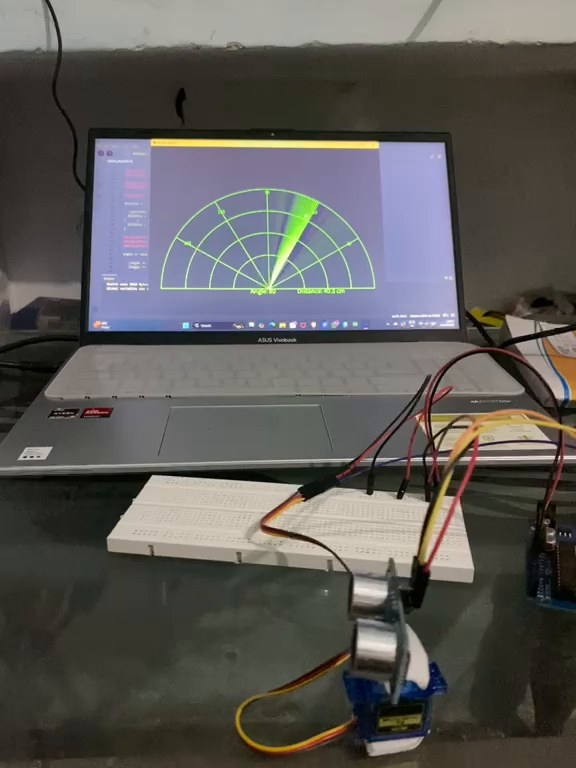
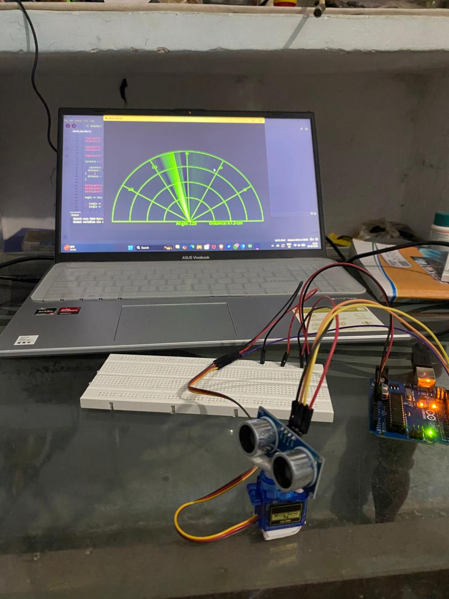

01 — EMBEDDED SYSTEMSLIVE SCAN ↗ARDUINO · HC-SR04 · SERVO2026
Radar-Based Obstacle Detection
Built a scanning distance-detection prototype using an ultrasonic sensor mounted on a servo. The Arduino sweeps through angles, measures echo time, and sends angle–distance readings over serial for a radar-style visualization.
- Servo sweep from 0° to 180° in 5° steps
- HC-SR04 echo timing converted to distance
- 9600-baud serial output for visualization
PROJECT DEMO
HARDWARE SETUP
